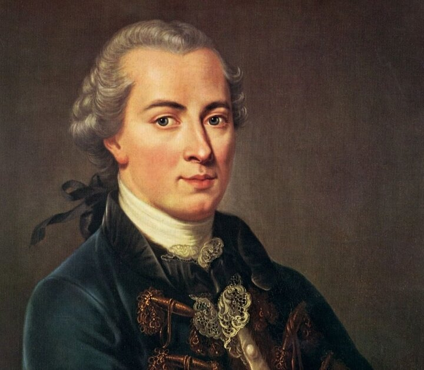

이번 한 주도 수고하셨습니다.
매일 매일이 바쁘고 힘들죠.
때론 웃음을 잊어버리기도 하고, 우리는 확실히 삶의 즐거움을 많이 잃어버린 것만 같습니다.
소확행, 소소하고 확실한 행복,을 찾는 사람들이 많아지는 것도 그 이유일 것 같습니다.
인생에서 큰 즐거움 대신 차라리 소소한 즐거움을 가져가겠다는 말입니다.
다른 관점으로 보면 인간은 모두 즐거움을 추구하는 공통점이 있다는 말이기도 합니다.
인생을 사는데, 재미없게 살고 싶진 않겠죠?
한번 뿐인 인생, 재미있고 즐겁게 잘 살아봅시다.
니체가 말했던 영원회귀 사상도 비슷한 맥락입니다.
결국 삶은 고통의 연속이고 불행하다 할지라도
이를 극복하고 초인과 같은 마음으로 즐거움을 찾는 것이 우리의 역할이라는 것이죠.
다만 니체는 즐거움이 인간 스스로에게서 온다고 했지만 정작 참된 기쁨과 즐거움은 하나님께로부터 옵니다.
어쨋든, 이번 별에선 즐거움에 대해 생각해보는 시간을 가져보길 원합니다.
“여호와를 즐거이 불러
기쁨으로 주께 나아가리
여호와 하나님 난 주의
백성 기르시는 양이라”
[감사함으로]-마커스워십
“나의 인생 신조는 일로 즐거움을 삼고, 즐거움을 또한 나의 가장 큰 일로 삼는 것이다.”
[아알론 바(확실하진 않음)]

“무엇보다 즐겨 노는 오락의 자리를 절제하라.
향락을 절제하면 당신은 그만큼 풍성해질 것이다.”
[이마누엘 칸트]
“오락은 생각할 수 없는 자들의 행복이다.”
[알렉산더 포프]
“누구라도 즐거움에 빠져있을 때는 위선자라는 허울을 벗어 던지게 된다.”
[새뮤얼 존슨]
“청년 시절이 일생 중에서 가장 행복한 시절이라고 생각하는 것은 잘못된 것이다.
왜냐하면 가장 행복한 사람은 가장 재미있는 생각을 하는 사람이기 때문이다.
그리고 우리는 나이를 먹음에 따라서 더 행복한 사람이 된다.”
[윌리엄 라이온 펠프스]
“고통이 미덕이라 가르치는 성직자의 말에 귀를 기울이지 말자.
왜냐하면 즐거움이야말로 선(善)이기 때문이다.”
[아나톨 프랑스]
"물은 물결 아니면 저절로 고요하고,
거울은 흐리지 않으면 스스로 맑게 된다.
마음도 이와 같으니,
그 흐린 것을 버리면 맑음이 저절로 나타날 것이요,
즐거움도 구태여 찾지 말 것이니
그 괴로움을 버리면 즐거움이 저절로 있으리라."
[채근담]
“인간의 존재 이유는 즐거움인가? 행복인가?
쾌락과 행복은 무슨 관계인가?”
[이은우] 2022 소망관 제3차 진리탐구토론 시간 중 발췌
“당장 지금의 행복이 제일 중요해.”
[YOLO족: 인생은 한번 뿐이다]
“Carpe diem.
현재를 즐겨라, 지금에 충실해라."
[죽은 시인의 사회]-나의 캡틴, 존 찰스 키팅 선생님